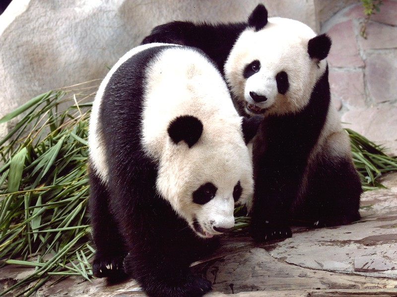

Gấu trúc
Tên tiếng anh: Panda

Gấu trúc lớn (Ailuropoda melanoleuca, nghĩa: "con vật chân mèo màu đen pha trắng", giản thể: 大熊猫; phồn thể: 大熊貓; bính âm: dàxióngmāo, nghĩa "mèo gấu lớn", tiếng Anh: Giant Panda), cũng được gọi một cách đơn giản là gấu trúc, là một loài gấu nguồn gốc tại Trung Quốc. Nó dễ dàng được nhận ra bởi các mảnh màu đen, lớn xung quanh mắt, trên tai, và tứ chi nó. Tuy thuộc về bộ Carnivora (bộ Ăn Thịt), chế độ ăn của gấu trúc gồm hơn 99% tre, trúc. Gấu trúc trong tự nhiên ăn thỉnh thoảng cỏ, củ dại, hay thậm chí thịt chim, gậm nhấm hay xác thối. Trong tình trạng giam cầm, gấu trúc ăn mật ong trứng, cá, lá cây bụi, cam, hay chuối cùng với các loại thức ăn đặc biệt khác.
Gấu trúc lớn sống ở một vài vùng núi ở trung tâm Trung Quốc, chủ yếu ở Tứ Xuyên, nhưng cũng xuất hiện ở Thiểm Tây và Cam Túc. Nông nghiệp, phá rừng đã đẩy gấu trúc khỏi các vùng đồng bằng chúng từng sinh sống.
Là một loài nguy cấp phụ thuộc bảo tồn. Một báo cáo 2007 cho thấy 239 cá thể gấu trúc sống trong điều kiện giam cầm ở Trung Quốc và 27 nước khác trên thế giới. Ước lượng số lượng hoang dã rất khác nhau; một ước tính cho thấy có khoảng 1.590 cá thể sống trong tự nhiên, trong khi một nghiên cứu năm 2006 thông qua phân tích ADN ước tính rằng con số này có thể cao đến 2000 đến 3000. Một số báo cáo cũng cho thấy rằng số lượng gấu trúc trong tự nhiên đang ngày càng tăng. Tuy nhiên, IUCN không tin rằng đủ chắc chắn để chuyển loài này từ nguy cấp thành dễ thương tổn.